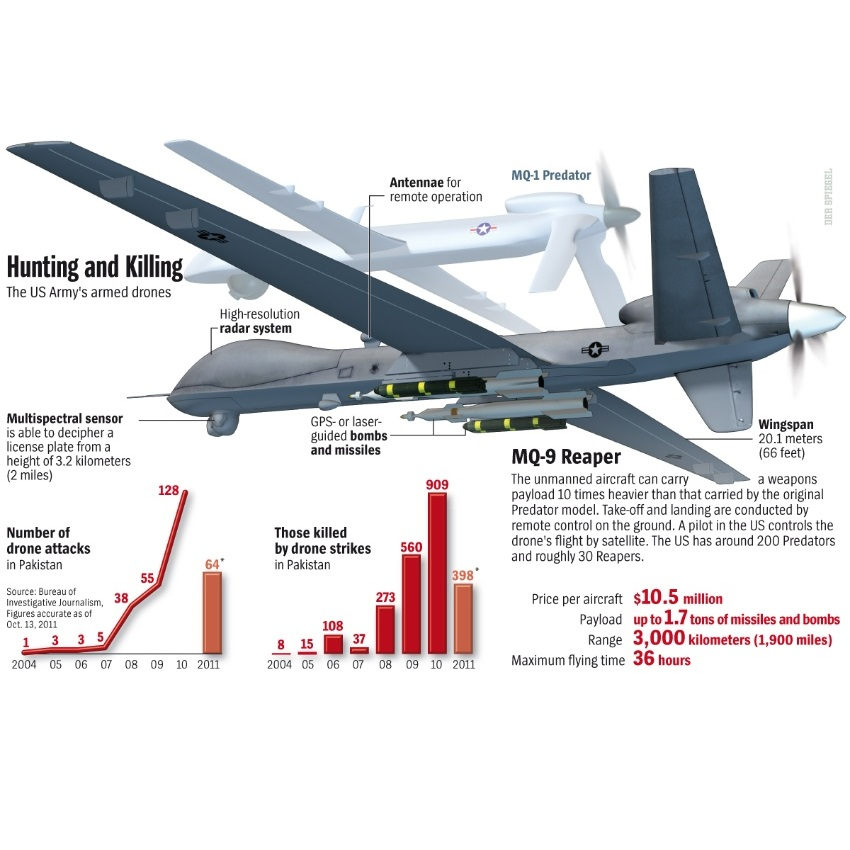
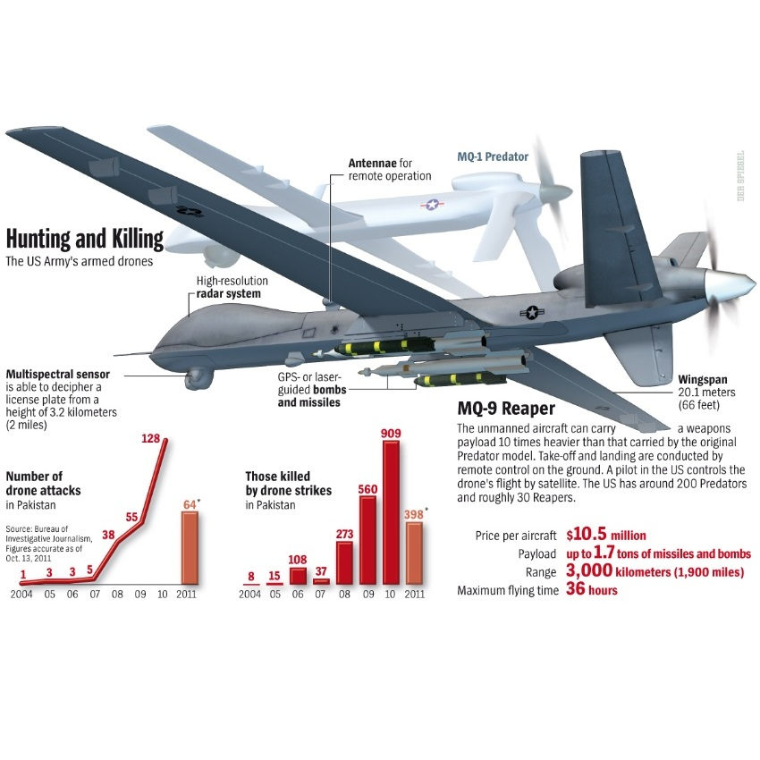

Drones
A drone, in a technological context, is an unmanned aircraft. Drones are more formally known as unmanned aerial vehicles (UAVs) or unmanned aircraft systems (UASes). Essentially, a drone is a flying robot. The aircrafts may be remotely controlled or can fly autonomously through software-controlled flight plans in their embedded systems working in conjunction with onboard sensors and GPS.
Consumer

Military


Surveillance